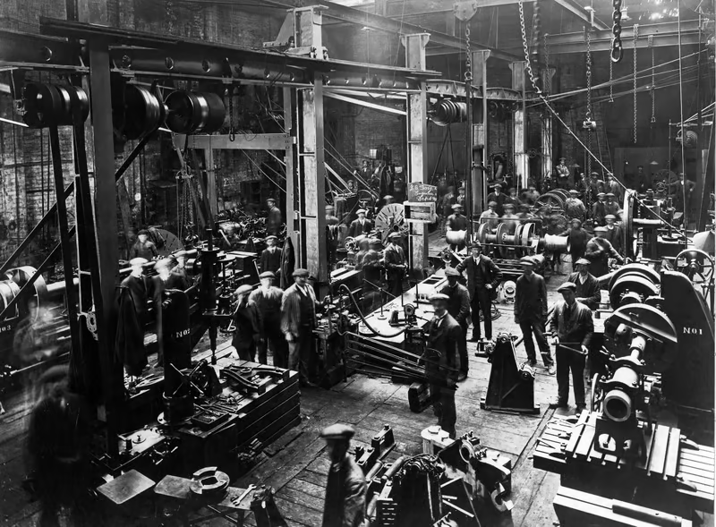
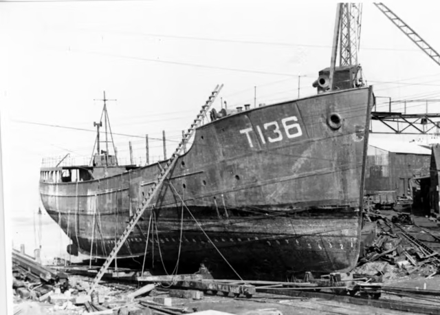

JS Doig fitting shop 1919


Waiting conversion
Almost complete
Being no longer needed by the British Royal Navy, HMT Juliet was sold and purchased by Regent Coasters Ltd. of London in 1947.
She was sent to J.S. Doig's of Grimsby for conversion to a cargo ship and engine refitting.
Her steam powerplant was replaced with an 8 cylinder diesel powerplant provided by Crossley Brother Ltd and she was relaunched as SS Peterjon.
On December 1 1948 she assisted in a rescue incident when the the SS Tungenes ran aground at Ferryside, Carmartheshire in Wales.| Refit : | J. S. Doig |
|---|---|
| New Engine : | Crossley 8 Cylinder |
| Displacement : | 545 tonnes |
| Dimensions : | 50m o/a 45.7m pp x 8.45m x 3.35m |
| Powerplant : | Crossley HRP 8/47 |
| Speed : | 14 knots |
| Complement : | Unknown |